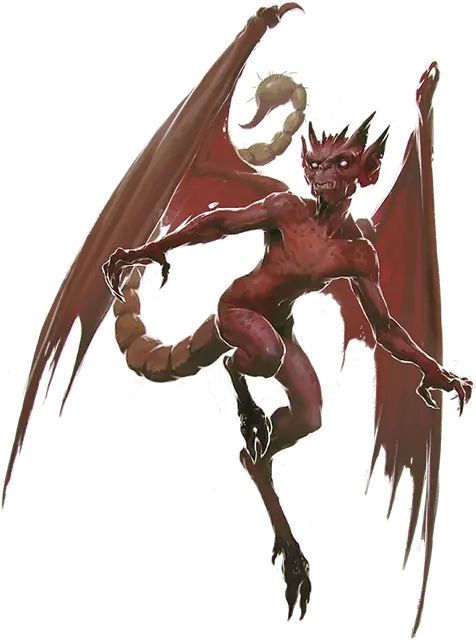

Бес
Imp
Крошечное Исчадие (Дьявол, Перевёртыш), законно-злое

Класс Доспеха 13
Хиты 10 (3к4 + 3)
Скорость 20 футов, летая 40 футов
| мод | спас | ||
|---|---|---|---|
| СИЛ | 6 | −2 | −2 |
| ЛОВ | 17 | +3 | +3 |
| ТЕЛ | 13 | +1 | +1 |
| мод | спас | ||
|---|---|---|---|
| ИНТ | 11 | +0 | +0 |
| МДР | 12 | +1 | +1 |
| ХАР | 14 | +2 | +2 |
Навыки Обман +4, Проницательность +3, Скрытность +5, Убеждение +4
Сопротивление урону холод; дробящий, колющий, рубящий от немагических атак, кроме нанесённых посеребрённым оружием
Иммунитет к урону огонь, яд
Иммунитет к состояниям отравление
Чувства тёмное зрение 120 футов, пассивное Восприятие 11
Языки Общий, Инфернальный
Опасность 1 (200 опыта)
Бонус мастерства +2
Особенности
Перевёртыш. Бес может действием принять звериный облик, напоминающий ворона (20 футов, летая 60 футов), крысу (скорость 20 футов) или паука (20 футов, лазая 20 футов), или принять свой истинный облик. Во всех обликах его статистика остается той же самой, исключая указанные изменения скорости. Все несомое и носимое им снаряжение не превращается. Он принимает свой истинный облик, если умирает.
Дьявольское зрение. Магическая тьма не мешает тёмному зрению беса.
Сопротивление магии. Бес совершает с преимуществом спасброски от заклинаний и прочих магических эффектов.
Вариант: Фамильяр бес. Бывает, что бесы состоят на службе у смертных заклинателей, помогая им как советники, шпионы или фамильяры. Бес подталкивает хозяина к совершению злых поступков, зная, что в результате душа смертного может достаться ему. Бесы демонстрируют необыкновенную верность своим хозяевам, и могут быть довольно опасными, если хозяину что-то угрожает. У некоторых из таких бесов имеется следующая особенность:
Фамильяр. Бес может служить другому существу фамильяром, создав телепатическую связь с желающим того хозяином. Пока они связаны, хозяин может ощущать то же, что и бес, пока они находятся в пределах мили друг от друга. Пока бес находится в пределах 10 футов от хозяина, на хозяина распространяется особенность беса Сопротивление магии. Если хозяин нарушит условия договора с бесом, последний может прекратить службу, оборвав телепатическую связь.
Действия
Жало (в зверином облике Укус). Рукопашная атака оружием: +5 к попаданию, досягаемость 5 футов, одна цель. Попадание: 5 (1к4 + 3) колющего урона, и цель должна совершить спасбросок Телосложения Сл 11, получая урон ядом 10 (3к6) при провале, или половину этого урона при успехе.
Невидимость. Бес магическим образом становится невидимым, пока не атакует или не утратит концентрацию (как при концентрации на заклинании). Все снаряжение, которое бес несет или носит, становится невидимым вместе с ним.
Описание
Бесы могут быть замечены повсеместно на Нижних Планах. Они работают на побегушках у дьявольских господ, шпионят за конкурентами, а также вводят в заблуждение и подстрекают смертных. Бесы будут с гордостью служить своим хозяевам, но на них нельзя положиться, если задача должна быть выполнена эффективно и быстро.
Бес может принимать животный облик по своему желанию, но в естественном состоянии он напоминает крохотного краснокожего гуманоида с колючим хвостом, маленькими рожками и кожаными крыльями. Они нападают из невидимости, ударяя своим ядовитым жалом.
См. дополнительно статью: "Бестиарий: Дьяволы"